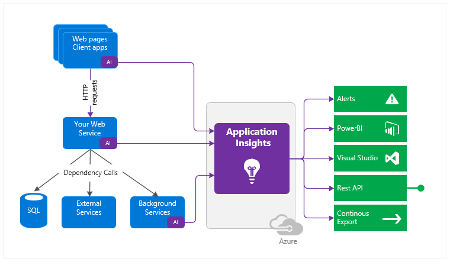

Application Insight Introduction¶
This blog introduces what Application Insight can do.
Application Insight Basics¶
Application Insights is aimed at the development team, to help you understand how your app is performing and how it’s being used.
It includes functions:
- Detect, triage, and diagnose issues in web apps and services (Detect: Know about any issues before your users, Triage: how many users are affected? How often does this happen? Diagnose: Where is the problem? When does it happen?)
- Detect issues through email and webhook alerts
- Diagnose exceptions and web app performance issues
- Perform root cause analysis with ad-hoc queries and full-text search
- Live application monitoring
- HTTP request rates, response times, success rates.
- Dependency (HTTP & SQL) call rates, response times, success rates.
- Exception traces from both server and client.
- Page view counts, user and session counts, browser load times, exceptions.
- AJAX call rates, response times and success rates.
- Server performance counters. (your Windows or Linux server machines, such as CPU, memory, and network usage)
- Segmentation by client location, browser version, OS version, server instance, custom dimensions, and more.
- Availability tests.
- Host diagnostics from Docker or Azure.
- Diagnostic trace logs from your app - so that you can correlate trace events with requests.
- Custom events and metrics that you write yourself in the client or server code, to track business events such as items sold or games won.
- Integrate with DevOps processes using Visual Studio Team Services
- Monitor web apps hosted on Azure, other cloud services, or on-premises servers
- Get started with Visual Studio or monitor existing apps without re-deploying
Diagnostic and analytic tools:
- Smart and manual alerts on failure rates and other metrics, and on availability.
- Charts over time of aggregated metrics.
- Diagnostic search on instances of requests, exceptions, custom events, log traces, page views, dependency and AJAX calls.
- Analytics - a powerful query language over your telemetry
- Dashboards - compose the charts you need to monitor all your app components.
- The Dependency Duration chart shows the time taken by calls from your app to external components such as databases, REST APIs, or Azure blob storage.
- Application map
- Profiler
- Live Metrics Stream
- Visual Studio
- Snapshot debugger
- Power BI
- REST API
- Continuous Export
Other Good Articles¶
Azure cloud service support: https://docs.microsoft.com/en-us/azure/azure-monitor/app/cloudservices
Feed PowerBI with application insight: https://docs.microsoft.com/en-us/azure/azure-monitor/app/export-power-bi
Billing service https://github.com/Microsoft/peek
Platform support: https://docs.microsoft.com/en-us/azure/azure-monitor/app/platforms
Work item for app insight: https://azure.microsoft.com/en-us/blog/application-insights-work-item-integration-with-visual-studio-team-services/
Application insight can also support Application Performance Management (APM) and AB testing.
Written by Binwei@Singapore